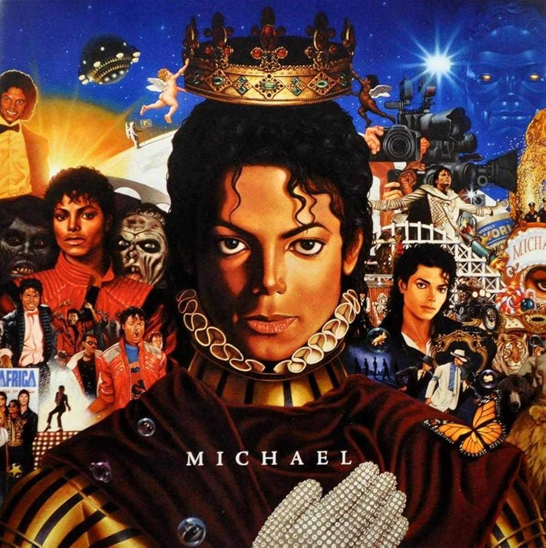
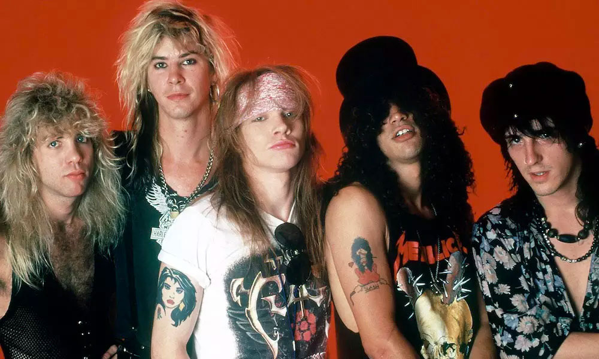
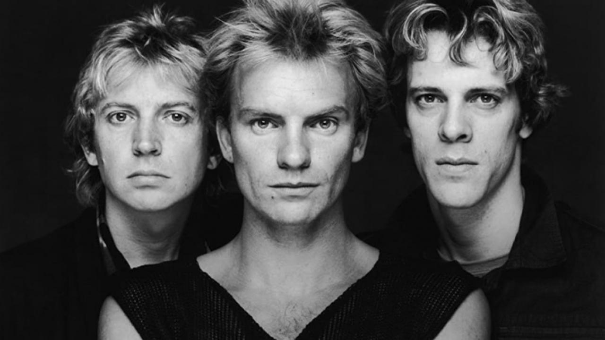
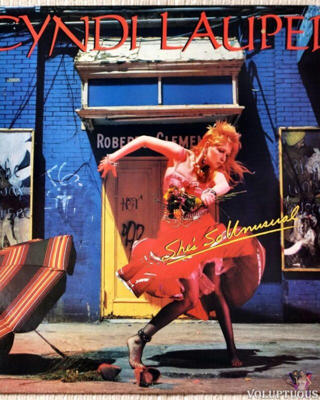

Michael Jackson
Pop
Michael Jackson fue uno de los artistas más influyentes de los años 80, conocido por su estilo único, coreografía y música innovadora.
Playlist destacada

Guns N' Roses
Rock
Guns N' Roses fue una de las bandas más influyentes de los años 80, conocida por su sonido rudo, energía y letras crudas.
Playlist destacada

The Police
Rock clásico británico
The Police fue una de las bandas más influyentes de los años 80, mezclando rock, reggae y elementos místicos en sus presentaciones.
Playlist destacada

Cyndi Lauper
Balada romántica
Cyndi Lauper destacó en los años 80 con un estilo suave, melódico y emocional que marcó a toda una generación.